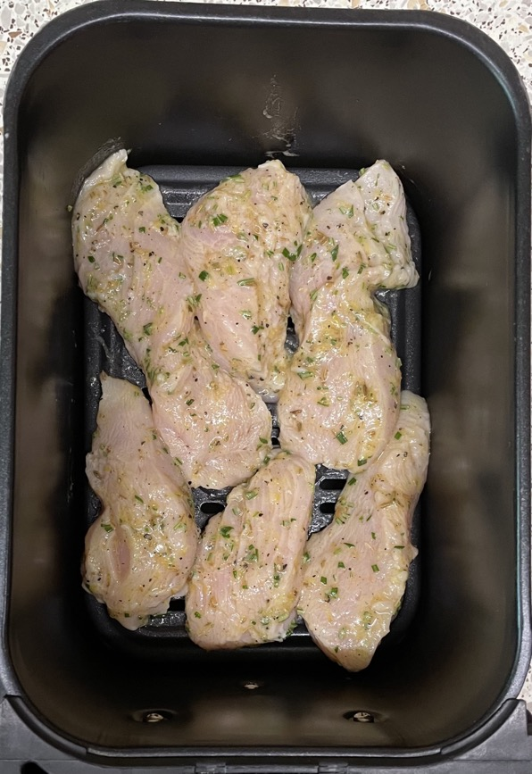

Roast chicken pieces
Cooking
- 400g chicken breast cut into similar sized pieces
- Marinate
- Roast in air fryer at 180°C for 8-10 mins till 70°C
Honey, mustard & garlic
- Coat and cook
- 3 tbsp tomato ketchup
- 1½ tbsp Worcestershire sauce
- 1 tbsp tomato puree
- 1 tbsp wholegrain mustard
- 1 tbsp honey
- 1 clove garlic minced
Honey & ginger
- Marinate and cook
- 20g honey
- 10g ginger
- 7g soy sauce
- 7g sake / shaoxing wine
Spanish style
- Marinate and cook
- 3 tbsp olive oil
- 2 tsp sherry vinegar (or rice / red wine / white wine vinegar)
- 2 cloves garlic
- 1 tsp thyme
- 1 tsp sweet smoked paprika
- 1 tsp ground cumin
- 1 tsp ground coriander
Tikka
- Marinate and cook
- 75g greek yogurt
- 25g ginger
- 2 cloves garlic minced
- 1 tbsp lemon juice
- 1 tbsp curry powder
- 1 tsp ground cumin
- 1 tsp ground turmeric
- 1 tsp mild chilli powder
- ½ tsp salt
Tikka - ready mixed
- Amounts for 2 chicken breasts
- Marinate and cook
- 70g greek yogurt
- 1 tsp light muscovado sugar
- sprinkle Geeta's tikka marinade
Honey & mustard
- Coat and cook
- 1½ tbsp honey
- ½ tbsp olive oil
- 2 tsp whole grain mustard
- 2 tsp lemon juice
- rosemary chopped
- pinch sugar
Italian
- Coat and cook
- 4 tbsp olive oil
- 2 tbsp lemon juice
- 30g parmesan grated (new)
- 1 tbsp fresh rosemary chopped
- zest ½ lemon grated
- ¼ tsp salt
- ¼ tsp black pepper
